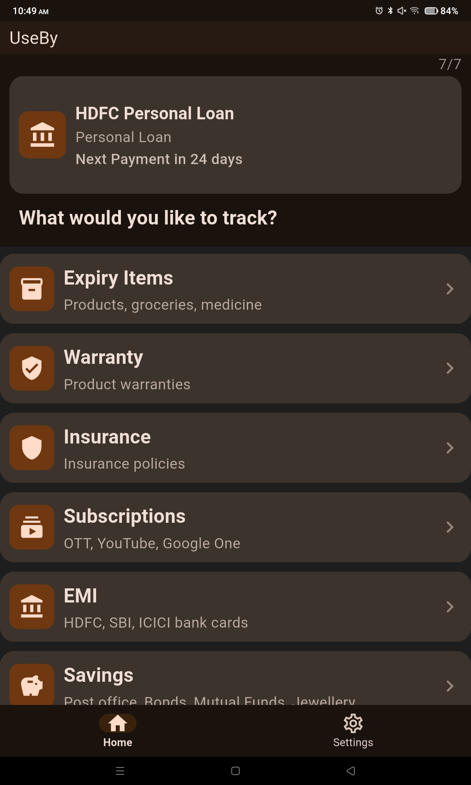
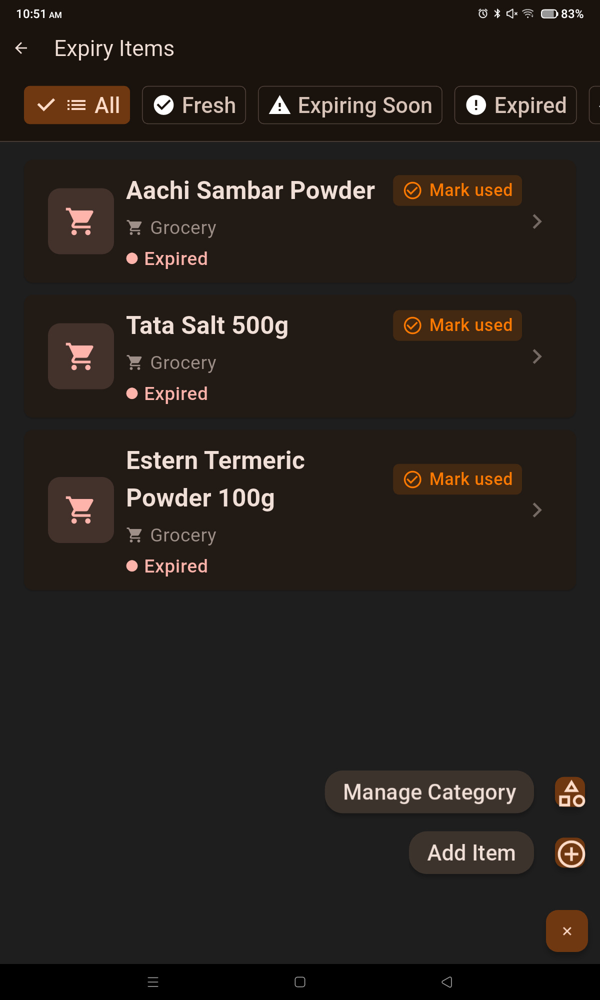
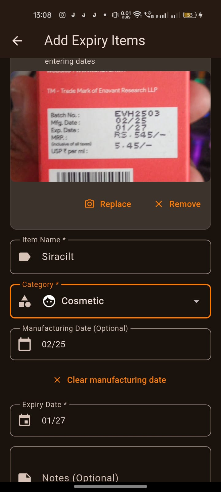
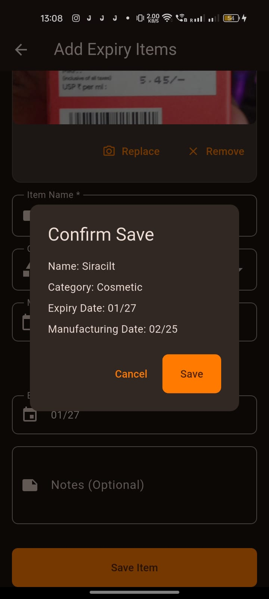
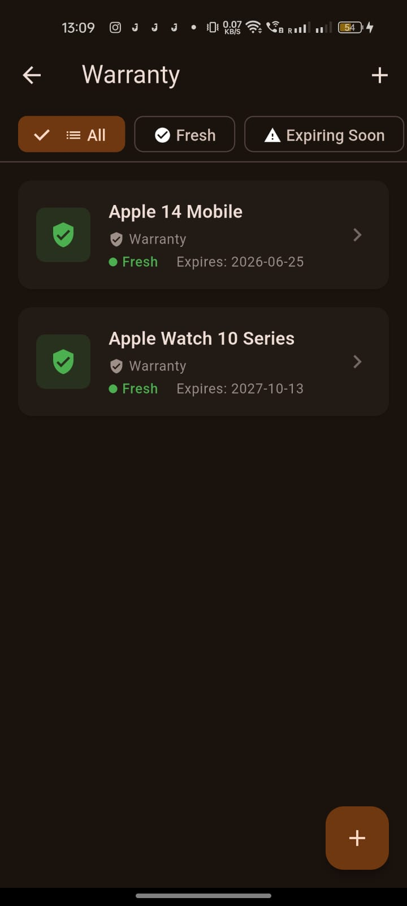
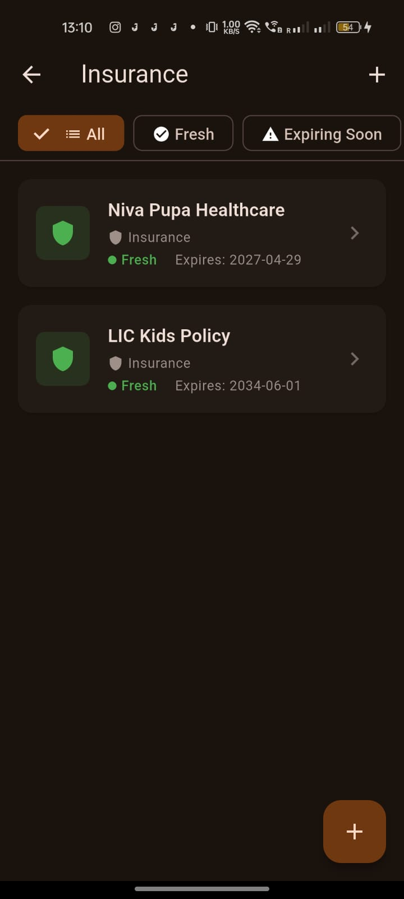

About the App
UseBy helps you track expiry dates, subscriptions, EMI payments,
savings goals, warranties, and insurance renewals — all in one secure and simple app.
Key Features
- Secure mobile authentication
- Track grocery and food expiry dates
- Monitor warranty and insurance renewals
- Track subscriptions and renewal reminders
- Manage EMI due dates
- Track savings goals
- Local notifications for reminders
- Optional app lock with customizable authentication (On Close / 24 Hours)
- Stay unlocked for 24 hours after authentication (if selected)
- Light and Dark theme support
- Works offline for core tracking features
- Camera support for quick entry
App Screenshots






View Privacy Policy